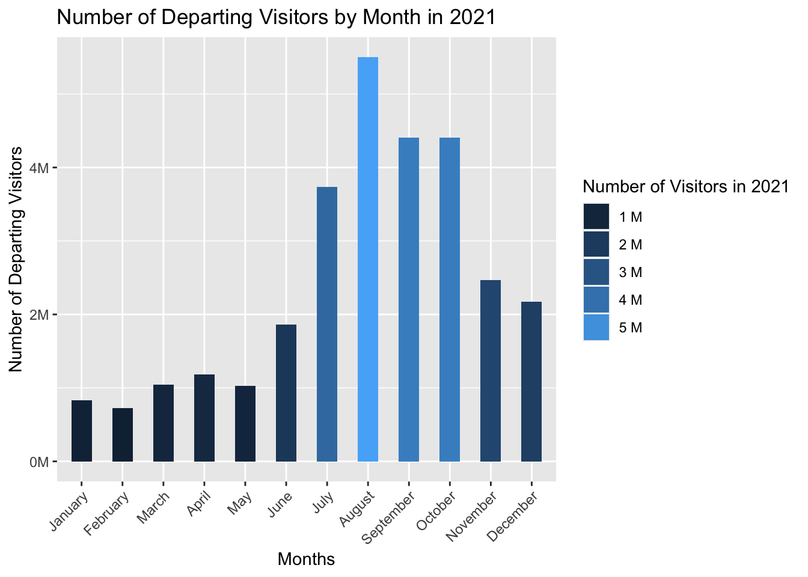
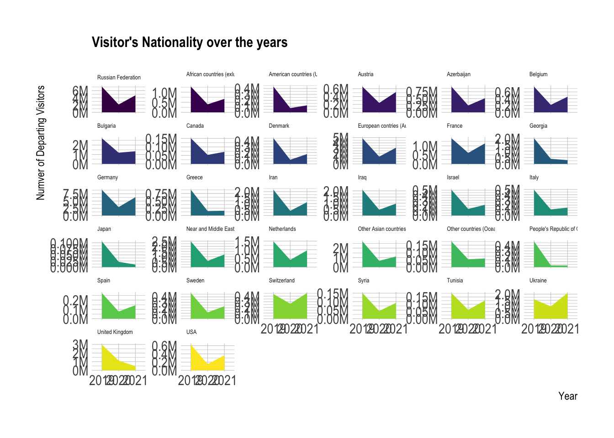
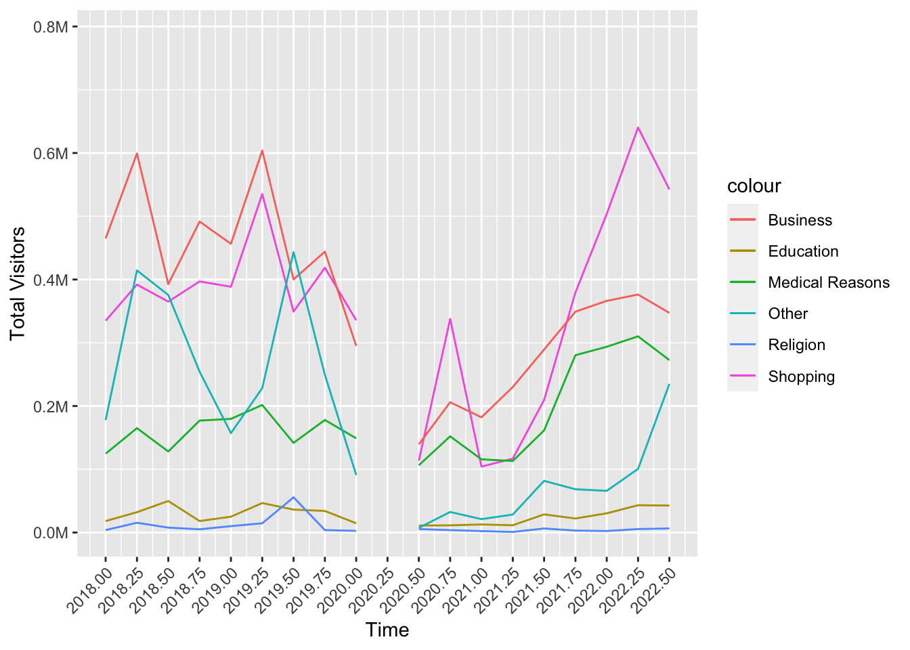

Code
library(tidyverse)
library(dplyr)
library(tidyr)
library(ggplot2)
library(reshape2)
library(plotly)
library(gapminder)
library(scales)
library(hrbrthemes)
library(viridis)
library(wordcloud2)library(tidyverse)
library(dplyr)
library(tidyr)
library(ggplot2)
library(reshape2)
library(plotly)
library(gapminder)
library(scales)
library(hrbrthemes)
library(viridis)
library(wordcloud2)With this project, we wanted to examine the effects of the pandemic we have been experiencing worldwide in 2020 on Turkey’s tourism in general and on a few specific issues, based on the year-based data we received from TUIK. We aim to present by visualizing the changes in the spending behavior of tourists, the changes in the nationality distribution of tourists who prefer Turkey, and the changes in the reasons why tourists come to Turkey with our analysis.
1- When we look at the number of visitors in general, the remarkable decrease in the pandemic period is striking. And in many respects, the number of tourists before the pandemic was still not reached.
2- When we look at the income from the pandemic, the improvement after the pandemic has been visible. And however, the amount of expenditure has not increased that much in touristic activities after the pandemic.
3- In country-wide analyzes, we see that while the number of visitors in some countries could not reach the pre-pandemic levels, in some countries there were large numbers of arrivals that did not exist before.
4- In summary, the stagnation during and after the pandemic is gradually dissipating and the number of tourists coming to Turkey and their expenditures are increasing.
There are 4 data sets that are used in the project. These are called;
These data sets were taken from TUIK. TUIK is an official data source that provides data for Turkey in diverse topics. Link to their website. Links for the data sets that are used here are in link1, link2, link3 and link4.
If we want to see the general effect of the pandemic in the number of tourists before we move on to the detailed subject analysis, we can see the sharp decrease in 2020 as follows and the decrease in the months in March, April and after when the bans started when we look at the months in 2020 and in 2021, we can see that the effects of the pandemic continue and there are normalization efforts, and we can see both an improvement in the numbers and still less.
income_nights <- readRDS(url("https://github.com/pjournal/mef06g-ramble-on/blob/main/term_project/income_nights.rds?raw=true"))
income_months <- readRDS(url("https://github.com/pjournal/mef06g-ramble-on/blob/main/term_project/income_months.rds?raw=true"))
income_n1 <- filter(income_nights, Quarter %in% c("Anual"))
ggplot(income_n1, aes(x = factor(Year), y= Number_of_Departing_Visitors, fill = Number_of_Departing_Visitors, ))+
geom_col(width = 0.5) + theme(axis.text.x = element_text(angle = 45, hjust = 1))+
ggtitle("Number of Departing Visitors by Year") +
xlab("Year") + ylab("Number of Departing Visitors") +
scale_y_continuous(labels = label_number(suffix = "M", scale = 1e-6)) +
scale_fill_continuous(labels = unit_format(unit = "M", scale = 1e-6)) +
guides(fill=guide_legend(title="Number of Departing Visitors"))
income_m1 <- filter(income_months, Months %in% c("January", "February", "March", "April", "May", "June", "July", "August","September","October","November","December"))
income_m1$month_in_int <- as.integer(factor(income_m1$Months, levels = month.name))
ggplot(income_m1, aes(x = reorder(Months, +month_in_int), y = Number_of_Visitors_2020, fill= Number_of_Visitors_2020)) +
geom_col(width = 0.5) + theme(axis.text.x = element_text(angle = 45, hjust = 1)) +
ggtitle("Number of Departing Visitors by Month in 2020") +
xlab("Months") +
ylab("Number of Departing Visitors") +
scale_y_continuous(labels = label_number(suffix = "M", scale = 1e-6)) +
scale_fill_continuous(labels = unit_format(unit = "M", scale = 1e-6)) +
guides(fill=guide_legend(title="Number of Visitors in 2020"))
ggplot(income_m1, aes(x = reorder(Months, +month_in_int), y = Number_of_Visitors_2021, fill= Number_of_Visitors_2021)) +
geom_col(width = 0.5) + theme(axis.text.x = element_text(angle = 45, hjust = 1)) +
ggtitle("Number of Departing Visitors by Month in 2021") +
xlab("Months") +
ylab("Number of Departing Visitors") +
scale_y_continuous(labels = label_number(suffix = "M", scale = 1e-6)) +
scale_fill_continuous(labels = unit_format(unit = "M", scale = 1e-6)) +
guides(fill=guide_legend(title="Number of Visitors in 2021"))
As we see from above graphic although the total income increases over the years, we can see that the expenditures of the tourists coming to Turkey do not exceed a certain limit.
If we need to talk about the meanings of the words; Tourism Expenditure : Tourism expenditure is the total of individual expenditures, total package tour expenditures remained abroad and GSM roaming expenditures. Tourism Income : Tourism income has been started to be calculated using BKM data and the results of the Departing Visitors Survey.
p <- income_n1 %>%
ggplot(aes(Tourism_expenditure_in_ThousandDollars, Tourism_Income_in_ThousandDollars, size = Number_of_Departing_Visitors, color = Year)) +
geom_point() +
theme_bw()+
ggtitle("Tourism Expenditure vs. Tourism Income") +
xlab("Tourism Expenditure in Thousand Dollars") +
ylab("Tourism Income in Thousand Dollars") +
scale_y_continuous(labels = label_number(suffix = "M", scale = 1e-6)) +
scale_x_continuous(labels = label_number(suffix = "M", scale = 1e-6))
ggplotly(p)With this analysis, we will try to analyze whether there is a difference before and after the pandemic on nationatily based. For this analysis we are going to use depart_by_residence dataset. This dataset only include the nationality, year and number of visitors came to Turkey.
As we want to examine the effect of the pandemic restrictions and effect of post-pandemic behaviors, we only get the 2019, 2020 and 2021 years for closer look. Because if we were to look all years, it would not be reasonable to make adjustments.
residence <- readRDS(url("https://github.com/pjournal/mef06g-ramble-on/blob/main/term_project/melted_depart_by_residence.rds?raw=true"))
residence_2 <- filter(residence, Dep_Year %in% c("2019", "2020" , "2021", "2022" ) )
ggplot( residence_2, aes(x = Dep_Year, y = Departing_Visitors, group= Nationality, fill = Nationality)) +
geom_area()+
scale_fill_viridis(discrete = TRUE) +
theme(legend.position = "none") +
ggtitle("Visitor's Nationality over the years") +
xlab("Year") +
ylab("Numver of Departing Visitors") +
scale_y_continuous(labels = label_number(suffix = "M", scale = 1e-6)) +
theme_ipsum() +
theme(
legend.position = "none",
panel.spacing = unit(0, "lines"),
strip.text.x = element_text(size = 5),
plot.title = element_text(size = 12)
) +
facet_wrap(~Nationality, scales = "free_y")
1- Many countries still have not reached the number of tourists that existed before the pandemic, after the pandemic. For example United Kingdom and USA is not reach the level of turists arrival still.
2- In addition, Ukraine and Switzerland exceeded the number of tourists before the pandemic. (When we consider that the year 2022 is not completed in this data set, we can fully think that it is not a reflection of the Russia-Ukraine war.)
3- In Italy, Georgia, Greece, Japan we can see that there is a tourist arrival far below the pre-pandemic countries. These countries are far below their pre-pandemic arrivals.
To investigate the reasons for coming to Turkey, data will be used in quarter of the year scale. TUIK categorizes these reasons with several topics and since quarters are added, showing all the data we have would be a mess on a single graph. Therefore, filters are used to trim the dates and 2 graphs used to show different categories.
library(ggplot2)
library(dplyr)
library(scales)
reasons_to_come <- readRDS(url("https://github.com/pjournal/mef06g-ramble-on/blob/main/term_project/purposes.rds?raw=true"))
reas_month <- filter(reasons_to_come, !Quarter %in% "Annual")
reas_month[reas_month == 0] <- NA
reas_month$Quarter_II <- reas_month$Quarter
reas_month["Quarter_II"][reas_month["Quarter_II"] == "I"] <- 0.0
reas_month["Quarter_II"][reas_month["Quarter_II"] == "II"] <- 0.25
reas_month["Quarter_II"][reas_month["Quarter_II"] == "III"] <- 0.50
reas_month["Quarter_II"][reas_month["Quarter_II"] == "IV"] <- 0.75
reas_month$Quarter_II <- as.numeric(reas_month$Quarter_II)
reas_month$Quarter_II <- reas_month$Year + reas_month$Quarter_II
reas_month <- reas_month %>% filter(Year > 2017)
ggplot(reas_month, aes(Quarter_II)) +
geom_line(aes(y = ALL_Shoppin, colour = "Shopping")) +
geom_line(aes(y = ALL_Education_training, colour = "Education")) +
geom_line(aes(y = ALL_Health_or_medical_reasons, colour = "Medical Reasons")) +
geom_line(aes(y = ALL_Religion_Pilgrimag, colour = "Religion")) +
geom_line(aes(y = ALL_Business, colour = "Business")) +
geom_line(aes(y = ALL_Other, colour = "Other")) +
ylab("Total Visitors") + xlab("Time") +
scale_x_continuous(breaks=c(2012, seq(2012, 2023, by = 0.25))) +
theme(axis.text.x = element_text(angle = 45, hjust = 1)) +
scale_y_continuous(labels = label_number(suffix = "M", scale = 1e-6))
The second graph
ggplot(reas_month, aes(Quarter_II)) +
geom_line(aes(y = ALL_Visiting_relatives_and_friends, colour = "Visiting Relatives")) +
geom_line(aes(y = ALL_Travel_entertainment_sportive_or_cultural_activities, colour = "Travel/Entertainment/Cultural etc.")) +
ylab("Total Visitors") + xlab("Time") +
scale_x_continuous(breaks=c(2012, seq(2012, 2023, by = 0.25))) +
theme(axis.text.x = element_text(angle = 45, hjust = 1)) +
scale_y_continuous(labels = label_number(suffix = "M", scale = 1e-6))
Tourists seem to visit Turkey for mostly Entertainment purposes which is not surprising. The peak is at the third quarter of the year 2019, which coincides with summer. Third quarters seem stable for this purpose during the years except for the pandemic year. The dramatic decrease in 2020 is appealing. Same period for 2021 still seems a bit short but it gets to the similar levels again in 2022. Visiting relatives and friends follows a similar pattern. People choose to visit their loved ones in mostly summer.
Shopping takes a significant step in the late 2021. This could be related to the starting of the inflation in Turkey and the serious decrease in the value of Turkish Lira.
Similar behavior can be seen in Medical Reasons category as well. Especially Turkey’s dental and hair implantation services are well-known in the globe. These got cheaper and cheaper for tourists which attracted crowds.
One could expect Education category to act similar as well since it’s getting cheaper with the same quality. But the word quality is the key here. Turkey’s most popular universities continue to loose rank in the world and the idea of quantity over quality seems to be in charge.
When it comes to Business, it can be seen that it still does not act like before. Post-pandemic world seem to got used to handle its business with less travel now.
All the conclusions we found and more are available in the shiny apps we developed. It is also possible to make your own analyzes on these data. You can access the applications and source codes from the link below.
When we look at the result of all these analyzes, there has been a significant recovery in the number of tourists coming to Turkey in 2022 compared to the pre-pandemic period. Although the economic and cultural effects of the pandemic on tourism have not recovered, it can be predicted that this loss will be compensated by the increase in the number of tourists in 2023. However, considering the economic conditions around the world, it cannot be predicted how the economic salvation on tourism will be.